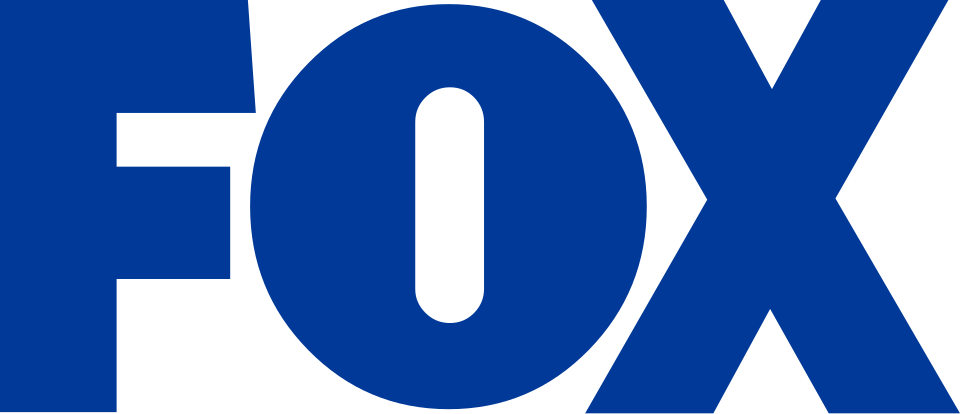

폭스 코퍼레이션 Fox Corporation
폭스 코퍼레이션(Fox Corporation)은 뉴욕에 본사를 두고 텔레비전 방송, 뉴스, 스포츠 방송을 중심으로 사업을 운영하는 미국의 다국적 대중매체 회사이다.
최종 업데이트

폭스 코퍼레이션은 어떤 브랜드인가
회사는 텔레비전 네트워크와 방송국, 뉴스 채널, 비즈니스 뉴스, 스포츠 방송, 스트리밍 서비스를 운영한다. 21st Century Fox의 텔레비전 방송·뉴스·스포츠 자산을 분리해 2019년 3월 19일 출범했으며, 나머지 자산은 다음 날 The Walt Disney Company가 인수했다.
주요 자산으로 Fox Broadcasting Company, Fox Television Stations, Fox News, Fox Business, Fox Sports, Tubi, Fox One 등을 보유한다. Rupert Murdoch의 신문 및 기타 미디어 자산은 별도 회사인 News Corp가 보유한다.
Lachlan Murdoch가 회장과 최고경영자를 맡고 가족 신탁을 통해 회사를 지배한다.
폭스 코퍼레이션은 어떻게 시작되고 성장했나
Rupert Murdoch가 창업한 회사로, 2017년 The Walt Disney Company가 21st Century Fox의 영화·텔레비전 제작·케이블 엔터테인먼트·위성방송 부문 인수 계획을 발표하면서 분리 구상이 시작됐다. 인수 대상에 포함되지 않은 방송 네트워크와 방송국, Fox News, Fox Sports의 전국 사업 등이 이른바 New Fox를 구성했다.
2018년 5월 Lachlan Murdoch가 새 회사를 이끌기로 확정됐고, 같은 해 11월 독립 회사가 기존 Fox 이름을 유지한다고 공개했다. 2019년 3월 19일 별도 운영과 거래를 시작하며 21st Century Fox를 대신해 S&P 500에 편입했다.
폭스 코퍼레이션의 브랜드 아이덴티티는 무엇인가
21st Century Fox에서 분리된 텔레비전 방송·뉴스·스포츠 자산을 중심으로 구성하고 영화·제작 자산과 구분한 점이 핵심 특징이다.
폭스 코퍼레이션의 대표 제품과 서비스는 무엇인가
텔레비전 방송 부문은 Fox Broadcasting Company와 Fox Television Stations를 중심으로 구성한다. 뉴스 부문에는 Fox News와 Fox Business가 있으며, 스포츠 부문은 Fox Sports를 통해 방송 사업을 전개한다.
Tubi와 Fox One도 회사 자산에 포함하며, 영화 제작과 케이블 엔터테인먼트 등 The Walt Disney Company가 인수한 사업은 현재 구성에서 분리했다. 과거 지역 스포츠 네트워크에는 새 브랜드가 마련될 때까지 FSN 이름을 사용하도록 허가했다.
폭스 코퍼레이션은 지금 어떤 상태인가
Lachlan Murdoch가 회장과 최고경영자를 맡고 있으며, 36% 의결권 주식을 가진 가족 신탁을 통해 회사를 지배한다. Rupert Murdoch는 명예회장이며 2023년 9월 21일 같은 해 11월 회장직에서 물러날 계획을 발표했다.
본사는 뉴욕에 있고 캘리포니아주 버뱅크에도 사무실을 운영한다.
폭스 코퍼레이션 로고는 어떻게 변해왔나
자주 묻는 질문
폭스 코퍼레이션는 어느 나라 브랜드인가요?
폭스 코퍼레이션는 미국의 미디어·엔터테인먼트 브랜드입니다.
폭스 코퍼레이션는 언제 설립되었나요?
폭스 코퍼레이션는 2019년 설립되었습니다.
폭스 코퍼레이션의 브랜드 아이덴티티는 무엇인가요?
21st Century Fox에서 분리된 텔레비전 방송·뉴스·스포츠 자산을 중심으로 구성하고 영화·제작 자산과 구분한 점이 핵심 특징이다.
폭스 코퍼레이션의 대표 제품은 무엇인가요?
텔레비전 방송 부문은 Fox Broadcasting Company와 Fox Television Stations를 중심으로 구성한다.
폭스 코퍼레이션는 현재 어떤 상태인가요?
Lachlan Murdoch가 회장과 최고경영자를 맡고 있으며, 36% 의결권 주식을 가진 가족 신탁을 통해 회사를 지배한다.
폭스 코퍼레이션의 창업자는 누구인가요?
폭스 코퍼레이션의 창업자는 루퍼트 머독입니다(위키데이터 기준).
폭스 코퍼레이션의 본사는 어디에 있나요?
폭스 코퍼레이션의 본사는 뉴욕에 있습니다(위키데이터 기준).
출처와 검증
폭스 코퍼레이션 관련 참고: 공식 웹사이트 · 위키데이터 Q60238941 · 한국어 위키백과 · 영어 위키백과. 브랜드명은 한글과 원어를 함께 표기하되 데이터에 없는 표기는 만들지 않습니다. 기원 국가·설립연도는 검수된 정의문에서 확인된 값을 우선하고, 없을 때만 공식 웹사이트 URL이 일치하는 위키데이터 개체의 값을 씁니다. 위키데이터 값은 2026-09-12 기준입니다.